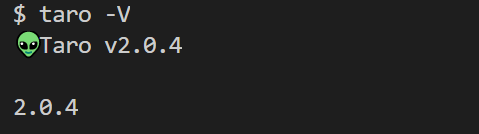
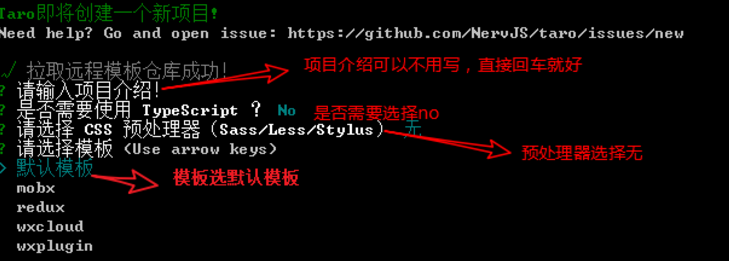
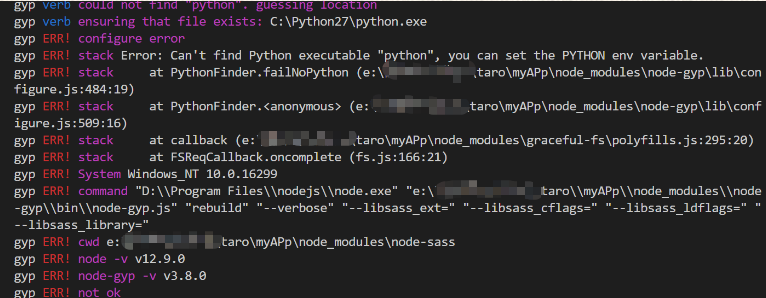
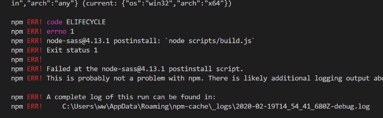

小程序的开发优势
- 用安装，即开即用，用完就走。省流量，省安装时间，不占用桌面。
- 对于小程序开发者来说，开发成本低，开发者可以有更多财力，人力，精力放在产品本身。
- 对于用户来说，保护隐私，降低低频率 App 使用门槛，减少线下服务等待时间，满足用户个性化需求，小程序的操作流程更统一。
利用 taro 创建小程序的步骤
第一步 全局安装脚手架
1
2
3
4
5
6
7
8
| 1. 使用 npm 安装 CLI
$ npm install -g @tarojs/cli
2. OR 使用 yarn 安装 CLI
$ yarn global add @tarojs/cli
3. OR 安装了 cnpm，使用 cnpm 安装 CLI
$ cnpm install -g @tarojs/cli
|
我个人更推荐使用第三种方式使用 cnpm 安装脚手架
脚手架搭建完成后建议利用命令检查脚手架是否搭建成功
使用这个命令如果成功会出现例如以下图片样式的版本号提示

第二步 创建项目
1
2
3
4
5
|
$ taro init 项目名
**不建议在此处使用 npx 创建**
|
第三步 创建项目步骤基本过程

提示！css 预处理器和模板可以根据个人需要进行选择
第四步 小程序创建完毕可以使用命令开始运行
运行到浏览器端
1
2
3
| $ npm run dev:h5
$ npm run build:h5
|
运行微信小程序
1
2
3
| $ npm run dev:weapp
$ npm run build:weapp
|
注意！！！如果安装项目出现依赖项安装失败提示手动安装时，请使用如下命令安装依赖项
1
2
3
4
5
6
7
8
| 1. 使用 npm 安装 依赖项
$ npm i
2. OR 使用 yarn 安装 依赖项
$ yarn i
3. OR 安装了 cnpm，使用 cnpm 安装 依赖项
$ cnpm i
|
如果使用 npm 安装依赖项出现以下报错方式,建议使用 cnpm 安装依赖项
 
疫情期间，逆战即迎战，加油！